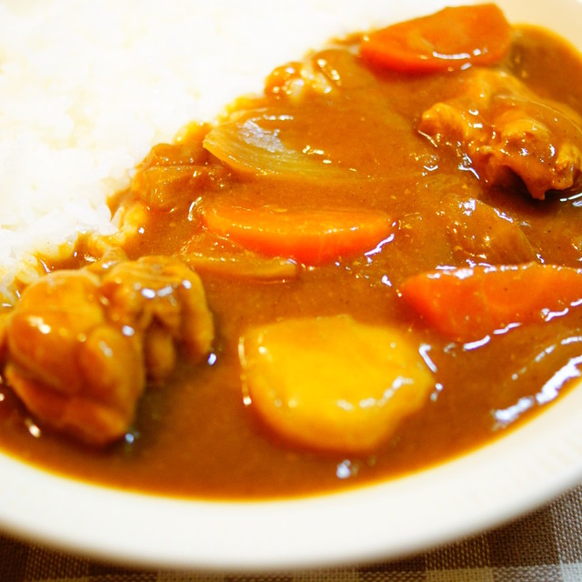

Japanese Curry

Description
Make a delicious dish of Japanese curry by first cutting your choice of
protein and vegetables, stir frying them, and then putting them into a pot
along with water, honey, and grated apples. Once cooked, add the curry
roux and wait until it dissolves. Then serve it with some cooked rice.
Ingredients
- 1 2/3 cups uncooked rice
- 1/2 of a large packet of curry roux
- 9 oz your choice of protein
- 1 brown onion
- 1 potato
- 1 carrot
- 1 tbsp olive oil
- 2 cloves of garlic
- 1/4 cup grated apple
- 1 tbsp honey
- Pinch of salt and pepper according to taste
- 2 cups water (500ml)
Steps
- Wash and cook the rice.
- Cut the meat into bite sized pieces.
-
Wash, peel, and cut the potato, carrot, and onion into bite sized
pieces.
- Peel and slice the garlic.
- Put olive oil in a pot over medium heat and add the garlic.
- Add meat, potato, carrot, and onion and stir fry
- Add the water, honey, and grated apple
-
Bring the pot a boil and turn the heat down to low to simmer until the
potatoes are soft and all the other ingredients are cooked.
-
Turn the heat off, break the curry roux blocks apart and add it to the
pot
- Stir the curry roux so that it dissolves
-
Turn the heat to low and bring it to a simmer so that the sauce thickens
- Pour the curry over a dish of cooked rice